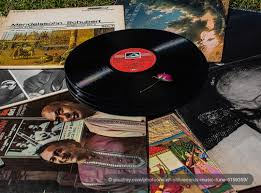
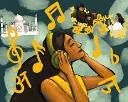
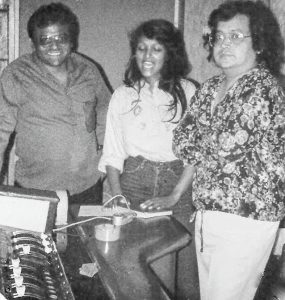
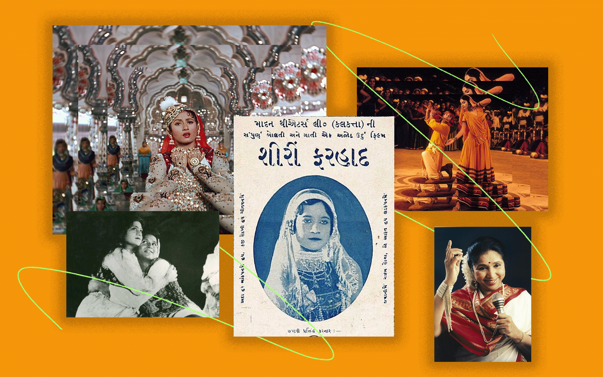
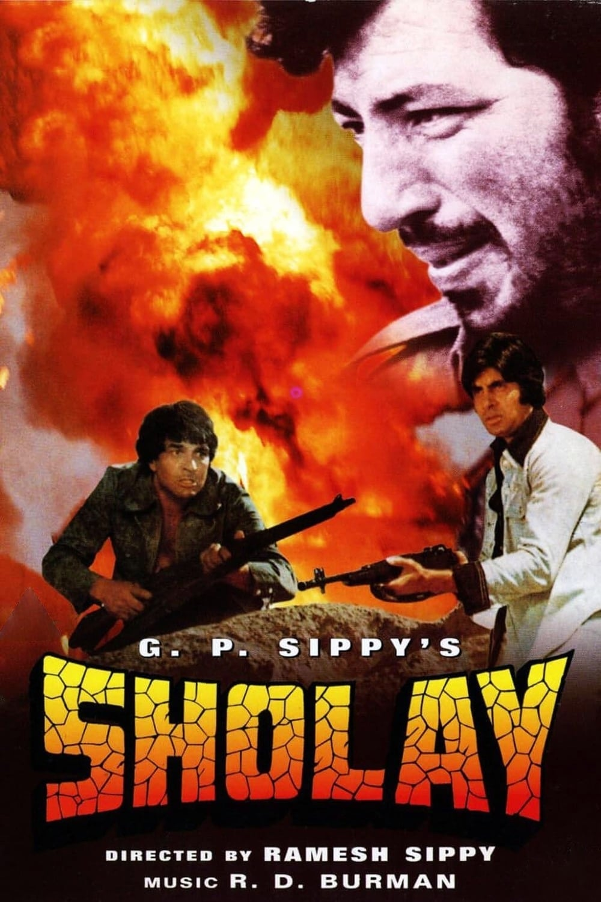
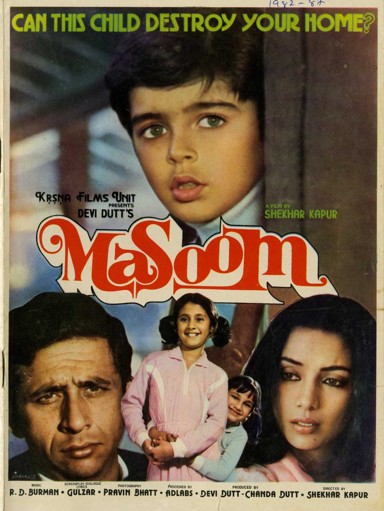
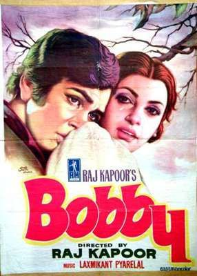
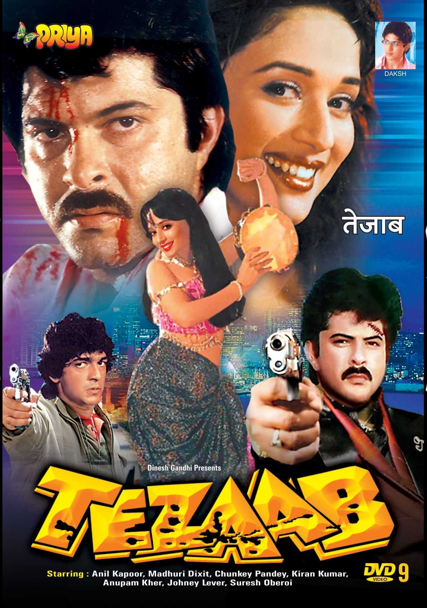
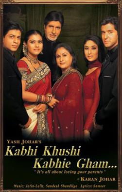
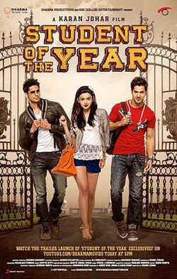

Bollywood Beats
Energetic, Enthusiastic, Euphoric. Hindi film music, also known as Bollywood music, is a major characteristic of Hindi cinema which gives it enduring popular appeal, cultural value and context. The roots of Bollywood musical history can be traced back to 1931, with the advent of India’s first sound motion film, Alam Ara by Ardeshir Irani, which featured seven songs. What began as an experiment soon became the heartbeat of Indian films. Bollywood music stands as one of the most defining elements of Indian popular culture, shaping not only the country’s cinematic identity but also its emotional and social landscape.

Between 1931 and 1940, India produced around 930 feature films with an average of ten songs per film. During this period, many of the original actors and actresses sang the songs, similar to Hollywood. However, during the ’40s and ’50s, due to major changes in film production, a new concept called playback singing was introduced. A playback singer, also known as a ghost singer, is a singer whose voice is pre-recorded for use in films, and actors or actresses lip-sync the songs for the camera. Many notable playback singers and major music directors came to prominence during this period. Bollywood music, in its early years, was dominated by classical ragas, folk influences, and orchestral arrangements. Legendary composers and singers gave us melodies that were not only unforgettable but also deeply connected with Indian traditions. Composers like Naushad, C. Ramchandra, and Shankar–Jaikishan brought grandeur and depth to film scores, while singers such as K.L. Saigal, Lata Mangeshkar, and Mohammed Rafi became the voices of a generation. This period laid the foundation for the Golden Age of Bollywood music (1950s–1970s), marked by melodious innovation, romantic themes, and unforgettable compositions by maestros like S.D. Burman, R.D. Burman, Madan Mohan, and O.P. Nayyar. Their collaborations with lyricists like Sahir Ludhianvi and Shailendra produced songs that were as poetic as they were timeless.

In the 1980s and 1990s, Bollywood music began embracing modern technologies and global influences. The disco wave led by Bappi Lahiri and the later emergence of A.R. Rahman revolutionized film soundtracks, fusing Indian classical elements with electronic and Western styles. Music became more experimental — reflecting a rapidly urbanizing India and appealing to younger audiences through catchy rhythms and diverse genres.
The new-age Bollywood music continues to expand its horizons, merging with global trends like hip-hop, EDM, and fusion. Artists such as Pritam, Vishal–Shekhar, Amit Trivedi, and Arijit Singh have redefined the modern soundscape, balancing emotion with contemporary flair. The rise of digital platforms and streaming services has also amplified Bollywood music’s reach, making it accessible to global audiences and creating cross-cultural appreciation from South Asia to the West.

Bollywood music was not as popular, however, during its initial days. It was considered to be demeaning to the culture and traditions of the country that families wanted their children to adhere to. At the most, kids were allowed to sing Bhajans. But teaching the kids any other filmy song beyond that was unimaginable. Thanks to musical reality shows on television in the last few decades, people have opened up to learning and performing Bollywood songs. Today, Bollywood music is more than just an accompaniment to film — it is a mirror of Indian society, chronicling its evolution through melody, rhythm, and emotion. From the soulful strains of the past to the eclectic sounds of the present, it continues to capture the spirit of India — diverse, expressive, and ever-evolving — while uniting millions through the universal language of music.

Old Is Gold
1970s-1980s
Songs of this era are known for their soulful melodies, heartfelt lyrics and powerful vocals that evoke a sense of nostalgia in their listeners. Often themed around love, romance and emotions, these songs can form deep emotional connections with audiences even today.

Early 70s Bollywood music, in particular, was characterised by soft, musical, dreamy songs with deep, emotional lyrics and hints of classical elements. Gulzar and Anand Bakshi's poetic lyrics, combined with the timeless voices Kishore Kumar and Lata Mangeshkar and beautiful orchestral background scores created surreal songs. Memorable duets grew in popularity, with male and female playback singers collaborating on melodious and romantic songs. Many semi-classical songs and ghazals were composed in the early 70s by music directors like Madan Mohan, Roshan, and Khayyam. Cabaret music, which was introduced in the 60s, still enjoyed popularity, though it was slowly being taken over by the simple, melodious songs.
The late 70s saw a significant shift in Bollywood music as composers like RD Burman, Laxmikant-Pyarelal, and Kalyanji-Anandji started experimenting with various musical styles. They delivered foot-tapping and peppy songs, incorporating elements of rock, disco, and funk into their compositions. The trends moved from melodies to jazz and rock 'n' roll to disco beats. Music was heavily influenced by the disco craze of the late 70s and early 80s. The use of synthesisers, drum machines, and electronic instruments added a modern touch to the music, making it more dance-friendly.

Bappi Lahiri, known as the 'Disco King', was one of the first Indian composers to use electronic instruments on a large scale. Dance-floor culture was brought to mainstream Bollywood by the electric and youthful music produced at this time. The song picturizations reflected this change moving from romance to party scenes and performances. They were loud, flashy and over-the top, with bright neon lights, mirror-tiled floors and disco balls. Dance costumes of the time included sequined jumpsuits, shiny shirts, bell-bottoms, metallic skirts, mostly golden, silver and glittery. They used props like strobe lights, smoke machines, metallic streamers, laser lights, etc. for special effects. The songs featured high-energy, synchronized dance moves with an emphasis on attitude; confident body language and flamboyant expressions. This disco craze had a profound cultural impact— they began to shape fashion, dance styles, and a nightclub culture among the youth.
However, by the late 80s, the disco era began to fade with the comeback of romantic melodies. But the catchy beats and rhythms it introduced continued to inspire music for decades to come.
So sit back, relax and enjoy the timeless melodies of this era:


Superhit Muqabla
1990s-2000s

As we move from the 80s to the 90s, with Bollywood music being copied straight from Western songs, it started losing its originality. However, this was also the era which saw the rise of musical 'Greatests Of All Time' like A.R. Rahman, whose unique and creative melodies created a brand of their own. Many songs of the 90s were known less for their melody, and more for their catchy lyrics and lively beats. Even the copied songs had an irreplaceable vibe, and are equally enjoyable nonetheless.
Following India's globalisation in the early 90s, Bollywood music began to draw from western cultures, creating songs which are a beautiful fusion of traditional classical music and modern pop rhythms. Another feature of the songs of this era; music was not just a background score anymore, it had started to become a part of the movie's identity. The first thing that comes to our mind when we think of most Bollywood movies of the 1990s or 2000s is often their soundtrack. The rise of legendary music composers, lyricists and singers produced iconic songs. Composers like Pritam, Anu Malik and A.R. Rahman revolutionised Bollywood music. Javed Akhtar and Gulzar told stories through their lyrics. The unforgettable voices of Sonu Nigam, Alka Yagnik, Udit Narayan, Shreya Ghoshal and other singers of these years made the songs even more magical.

With peppy songs and dance numbers gaining popularity, vibrant and glamorous music videos featuring extensive choreography and elaborate sets were created. Towards the late 90s and early 2000s, Bollywood began exploring new genres like hip-hop, rock and jazz, for example, Rock On!! and Jaane Kyun . The 2000s also saw a rise in indie music that was outside of mainstream Bollywood.
Come, relive your memories with some iconic hits of the 90s and 00s!


Modern
2010 onwards
By 2010, Bollywood music had become a fusion of various genres like classical, EDM, hip-hop, reggaeton, trap, and pop. The modern era marks a period of remarkable experimentation, globalization, and digital transformation. As technology and audience tastes evolved, film music began to merge seamlessly with the world of independent and international sounds.

From 2010 onwards, composers such as Pritam, A.R. Rahman, Vishal–Shekhar, Amit Trivedi, and Ajay–Atul shaped a new-age sound that fused traditional Indian melodies with contemporary genres like pop, EDM, hip-hop, and R&B. Their work reflected an increasingly cosmopolitan India — confident in its heritage yet eager to embrace global styles. Playback singers including Arijit Singh, Shreya Ghoshal, Sunidhi Chauhan, Neha Kakkar, and Armaan Malik became defining voices of the decade, delivering songs that blended emotional resonance with modern production. The rise of lyricists such as Amitabh Bhattacharya and Irshad Kamil added depth and poetry to this changing musical landscape.
The digital revolution has been central to this era’s transformation. Music streaming platforms, YouTube, and social media reshaped how songs reach audiences — often turning film tracks into viral phenomena within hours of release. This accessibility has expanded Bollywood music’s global footprint, attracting listeners from across South Asia, the Middle East, and the Indian diaspora worldwide. Collaborations with international artists and remixes of classic hits have further bridged cultural boundaries, giving Bollywood a distinct place in the global pop industry.

Musically, this era celebrates diversity: energetic dance tracks coexist with soulful romantic ballads, while experimental compositions explore themes of identity, individuality, and modern relationships. Alongside mainstream film music, independent or indie music, has grown to become an influential complement to Bollywood’s cinematic soundscape. Indie artists and bands such as Prateek Kuhad, Divine, Ritviz, Jonita Gandhi, and Nucleya have gained massive popularity, often releasing singles and albums outside of films while collaborating occasionally with Bollywood projects.
Another notable trend in post-2010 Bollywood music is the revival and remixing of classic songs. Music directors frequently reimagine timeless tracks from earlier eras, blending original melodies with contemporary beats, electronic elements, and modern vocal arrangements. This trend not only introduces iconic songs to younger audiences but also bridges generations, creating a sense of nostalgia while catering to modern tastes. Remixes often spark viral attention on social media and streaming platforms. While sometimes debated for altering the original essence, these reimagined tracks have become an integral part of the contemporary musical landscape.
In essence, Bollywood music since 2010 reflects the voice of a generation that is digitally connected, globally aware, yet emotionally rooted. It continues to embody India’s evolving identity — blending rhythm, sentiment, and innovation to create music that resonates far beyond cinema.
Here are some of the most popular songs of the last decade: